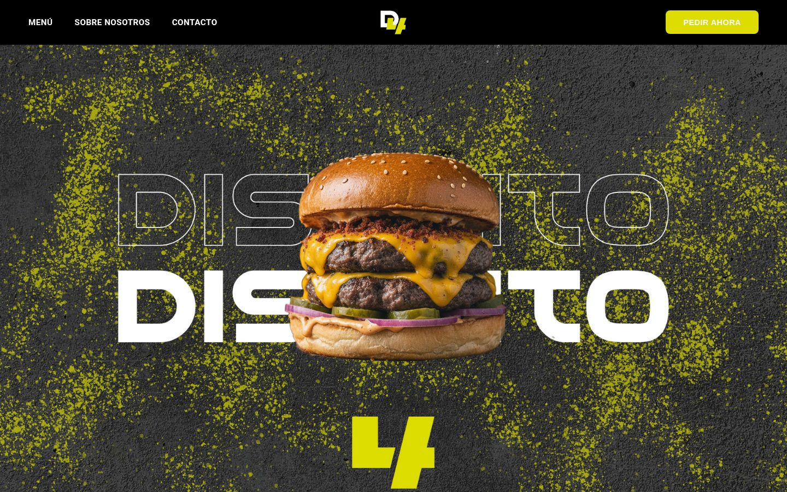

Rol
Marca · Diseño web
Hamburguesería premium en Málaga. Marca y web con carácter: dry aged, producto y una estética potente pensada para destacar.

Posicionar una hamburguesería premium lejos del look genérico de fast food: más producto, más actitud y una identidad que se sienta exclusiva.